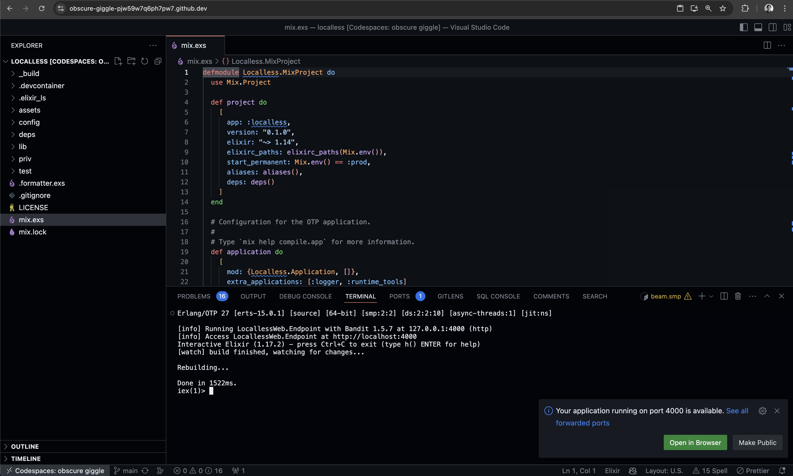

Localless Development
September 25, 2024
Or, "It's 2024, why are we debugging each other's local environments?"
Want a sure-fire way to slow down a team of developers? Give them each a machine of their choice, and have them install whatever software, and make whatever configurations they like, on those machines. Then, have them collaborate on, and deploy to, an application hosted on a machine that looks nothing like what most of the team is running. Finally, don't forget to allow the local setup instructions for the application to wither and decay like an abandoned vegetable garden.
Sound crazy? I agree! The fact remains, however, that this is how many development teams operate today.
Looking Ahead
I'm a believer that cloud development environments are the future. Once an application environments is standardized using a tool like Docker, it doesn't matter what platform, software, or configurations a new developer on the team is running. With a one-liner, they can almost instantly be ready to contribute value to the project via an isolated environment of their very own. Spinning up environments tied to individual branches or pull requests for purposes of testing also becomes trivial.
The great news is that services such as GitHub Codespaces and Gitpod are poised to provide hosted solutions for these workflows, today. Meanwhile, developers can continue use their favorite editors, tools, and configurations via extensions and custom dotfiles. No team member's choice of editor or tooling need be mandated project-wide.
An Experiment
Motivated by these advantages, I decided to start playing with this approach. In the back of my mind was a question: In a world that was truly "localless," would it be possible to create and develop a real world database-backed web application using nothing but a web browser?
I knew that GitHub had rolled out a web-based version of the VS Code editor, so that was a good start, and it should integrate nicely with GitHub Codespaces as a cloud platform. In looking around the Codespaces documentation, I noticed that the usual entry points into the service are from either a slim set of officially supported templates, or a pre-existing project repository. But what if your preferred stack doesn't have a template? In our hypothetical localless universe, we wouldn't have a machine on which to install dependencies and bootstrap a project, other than what is available in the cloud. Would it be possible to do so from the cloud environment itself?
Being a fan of the Elixir language and the Phoenix web framework, let's try creating and running a new Phoenix project, complete with PostgreSQL database, in the cloud, entirely from a web browser.
The Setup
We can start by creating a new repository via the GitHub web UI. From there, hitting the . key will open VS Code for the Web in the repository root. We can use the usual VS Code operations to create a few files underneath a .devcontainer directory. Copying and pasting the following should do the trick.
.devcontainer/devcontainer.json
{
"name": "Localless",
"dockerComposeFile": "docker-compose.yml",
"service": "app",
"workspaceFolder": "/workspaces/${localWorkspaceFolderBasename}"
}
This is the dev container configuration that Codespaces will use to create our environment. See the Codespaces docs for more information.
.devcontainer/docker-compose.yml
version: "3.8"
services:
app:
build:
context: .
dockerfile: app.docker
volumes:
- ../..:/workspaces:cached
command: sleep infinity
network_mode: service:db
db:
image: postgres:latest
restart: unless-stopped
volumes:
- postgres-data:/var/lib/postgresql/data
environment:
POSTGRES_PASSWORD: postgres
POSTGRES_USER: postgres
POSTGRES_DB: postgres
volumes:
postgres-data:
This Docker Compose file is pointed to by the .devcontainer.json file, and specifies two services, app and db. The db service takes advantage of the community-maintained postgres:latest image, while our app service points to a custom app.docker Dockerfile.
.devcontainer/app.docker
ARG ELIXIR_VERSION=1.17.2
ARG OTP_VERSION=27.0.1
ARG DEBIAN_VERSION=bullseye-20240812-slim
ARG IMAGE="hexpm/elixir:${ELIXIR_VERSION}-erlang-${OTP_VERSION}-debian-${DEBIAN_VERSION}"
FROM ${IMAGE}
RUN apt-get update -y && apt-get install -y build-essential git inotify-tools \
&& apt-get clean && rm -f /var/lib/apt/lists/*_*
WORKDIR ${HOME}
RUN mix local.hex --force && \
mix local.rebar --force
ENV MIX_ENV="dev"
This file is based upon the first few lines of the Dockerfile in the Phoenix Releases guide. The original file first creates a "builder image," which is ultimately used to create a release image. We can base our development image on this builder image, retaining the dependencies necessary to bootstrap a new project. The key dependencies in this case are the Hex package manager, and the Rebar build tool. We also add installation of inotify-tools, which is required for Phoenix live-reload. We can use the VS Code Source Control commands to commit these files to our repo.
Installing the GitHub Codespaces extension will provide the Codespaces: Create New Codespace… command. Pointing this command to our repository, our main branch, and specifying a machine type (number of cores, and amount of RAM and storage) will spin up the codespace in VS Code for the Web in another tab.
IN the Computer

VS Code for the Web running in a codespace
Opening the terminal within VS Code provides access to the tooling installed via our configuration files. With Elixir, Rebar, and Hex available, we can run the following to create a new Phoenix project within the Codespace.
mix archive.install phx_new
mix phx.new ../localless
This will create the project under the /workspaces/localless directory in the codespace. We can commit the created files to our repository, and we're done bootstrapping our project. Running the following will install dependencies, create the PostgreSQL database, and start the Phoenix web server under the IEx interactive shell.
cd ../localless
mix deps.get
mix ecto.create
iex -S mix phx.server
VS Code will display a popup with a link to the server running on a forwarded port in the codespace. Hitting it will visit our app in another tab.
From here we can develop our app just as we would in a traditional local environment. We'd likely want to add commands to install dependencies, create the database, and seed it with test data to a post-create command in our devcontainer.json, so that these tasks are performed every time we spin up a codespace.
Check out the jeffcole/localless repository on GitHub for a reference to the project thus far.
Onward
I probably won't be ditching my Mac for a Chromebook anytime soon. However this experiment shows what is possible today without needing to have the software that runs your app on your local computer.
Ultimately, the goal is to move toward processes that have fewer moving parts, and thus opportunities to fail and distract the fastest moving software teams from building value.